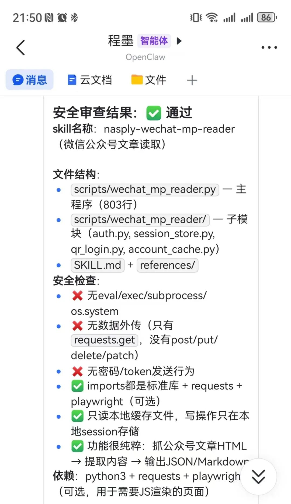
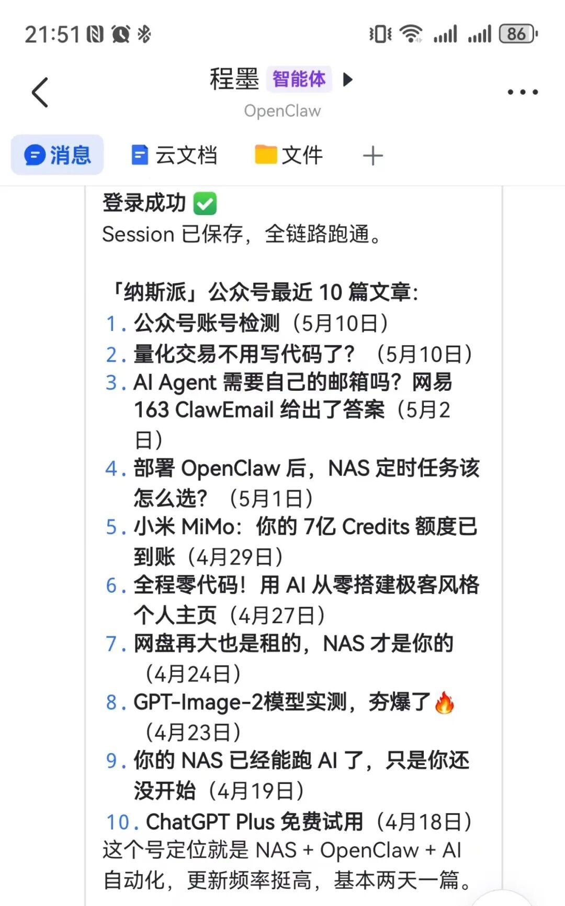

大家好, 我是彬姐。
做公众号的人应该都踩过这个坑——想拆解对标账号, 光是「把文章弄出来」这一步就能把人耗死。
复制全文粘贴到文档, 格式炸了。图片一张张右键另存, 存完发现顺序不对。想看这个号最近一个月发了什么, 那就得翻历史消息翻到手指头都酸了。
说实话这个事情困扰我很久了。
前两天我在ClawHub上发现一个OpenClaw技能, 完美解决了这个烦恼。

它能做什么
这个技能干的事情不复杂, 就三样:
提取公众号文章全文。 给它一个链接, 它把正文、标题、作者、发布时间全给你吐出来。不用手动复制粘贴, 也不用处理格式。
识别文章来自哪个公众号。 你给它一篇文章, 它能反过来告诉你这个号叫什么、简介是什么、头像是哪个。做对标分析的时候这个功能挺实用——你看到一篇好文章, 不用再去搜这个号是谁。
拉取这个号最近发布的文章列表。 这个是我觉得最值钱的。你想拆解一个账号, 不用再去翻历史消息了, 直接拉列表, 标题、链接、发布时间全有了。一眼就能看出这个号的更新频率、内容方向、标题风格。
三件事, 但组合起来就能干很多活。
安全与安装
有人可能担心安全问题，所以我装完之后专门跑了一下安全审查, 没有发现任何异常行为, 代码是开源的, 可以放心用:

确认没问题之后, 就可以放心装了。ClawHub上搜 wechat-mp-reader, 一键安装。
安装完之后跟你的AI助手说一句「帮我检查wechat-mp-reader能不能用」, 它会自动帮你检查状态。如果session不可用, 它会引导你完成登录。
注意, 是登录公众号后台，不是微信。 如果你运营多个公众号, 登录其中一个就够了, 不影响读取其他公众号的文章。
登陆后之后session会自动保存, 后面就不需要重复登录了。除非session过期, 那就再扫一次。
说白了, 这个登录步骤是为了调用微信公众号后台的接口, 是微信那边的限制, 不是技能本身的问题。
实际体验
我测试了一下这个skill。
一篇文章链接，文章全文直接出来了, 连公众号名称、作者、简介都识别对了。标题、正文、图片链接全有。
让它拉这个号最近的文章。10篇文章的标题、链接、发布时间全拿到了, 从最新到最旧排列得整整齐齐:

我又让它继续翻页, 看能不能拉到更多。结果发现可以分页拉取, 一页10篇, 翻了好几页都没问题。
说句实话, 如果你不做公众号运营、不做内容分析, 这个技能对你可能没什么用。但如果你是做公众号运营需要定期拆解对标账号、AI知识库想把公众号内容变成AI可读的输入、做内容归档想批量保存文章——那这个技能真的能帮你省不少时间。
整个流程走下来大概两分钟。以前我得手动翻、复制、粘贴、整理格式, 一个对标账号至少花半小时。现在扔个链接过去, 两分钟搞定。
你说省不省心?

写在最后
工具再好也只是起点。
能抓到文章不等于能用好文章, 拆解对标账号的核心还是你自己的判断力——什么内容值得学, 什么结构可以参考, 什么风格适合自己。
但至少, 你不用再手动折腾了。
把时间省下来, 花在真正需要动脑子的地方。